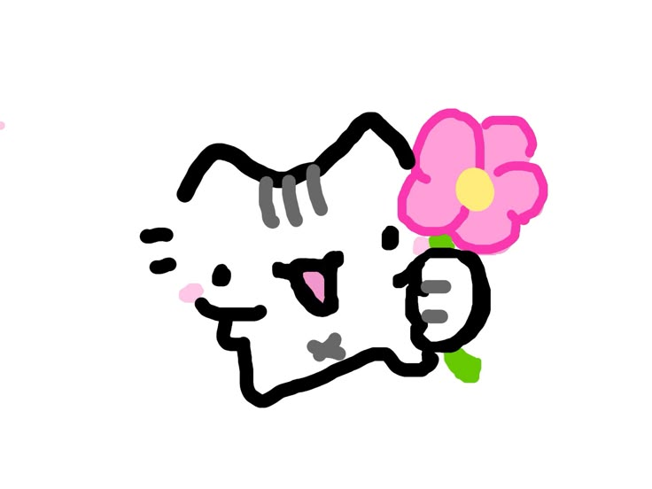

Некоторые комнатные растения и срезанные цветы могут быть опасны для кошек — вызывать отравления, ожоги, аллергические реакции, проблемы с дыханием и даже приводить к летальному исходу. Иногда достаточно, чтобы пыльца растения попала в дыхательные пути или на слизистую, чтобы навредить питомцу. Будьте осторожны: если вы хотите порадовать близкого человека новым цветком, сначала проверьте его безопасность для животных. Заботьтесь о своих питомцах, выбирая дружелюбную к ним зелень для дома.